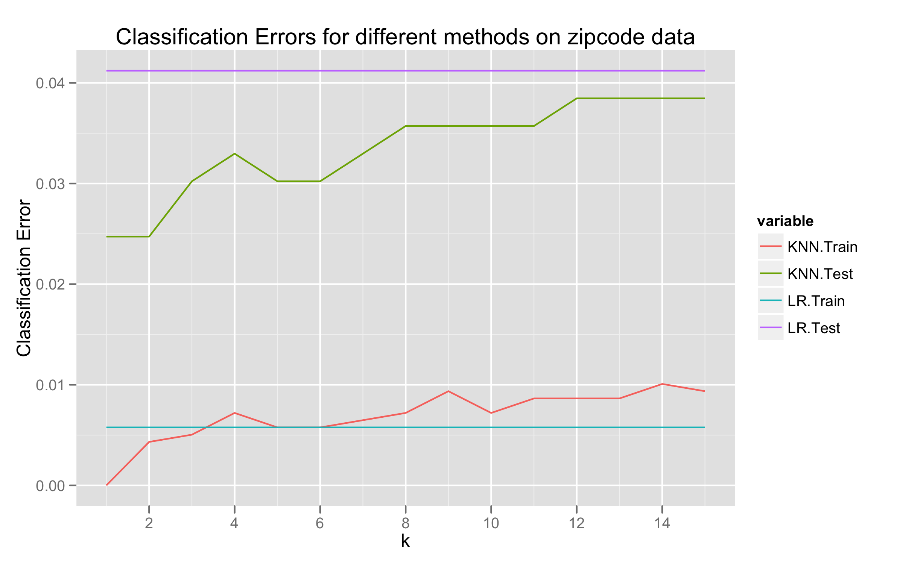

Elements of Statistical Learning - Chapter 2 Solutions
The Stanford textbook Elements of Statistical Learning by Hastie, Tibshirani, and Friedman is an excellent (and freely available) graduate-level text in data mining and machine learning. I'm currently working through it, and I'm putting my (partial) exercise solutions up for anyone who might find them useful. The first set of solutions is for Chapter 2, An Overview of Supervised Learning, introducing least squares and k-nearest-neighbour techniques.
Exercise Solutions
See the solutions in PDF format (source) for a more pleasant reading experience. This webpage was created from the LaTeX source using the LaTeX2Markdown utility - check it out on GitHub.
Overview of Supervised Learning
Exercise 2.1
Suppose that each of $K$-classes has an associated target $t_k$, which is a vector of all zeroes, except a one in the $k$-th position. Show that classifying the largest element of $\hat y$ amounts to choosing the closest target, $\min_k \| t_k - \hat y \|$ if the elements of $\hat y$ sum to one.
Proof
The assertion is equivalent to showing that \begin{equation} \text{argmax}_i \hat y_i = \text{argmin}_k \| t_k - \hat y \| = \text{argmin}_k \|\hat y - t_k \|^2 \end{equation} by monotonicity of $x \mapsto x^2$ and symmetry of the norm.
WLOG, let $\| \cdot \|$ be the Euclidean norm $\| \cdot \|_2$. Let $k = \text{argmax}_i \hat y_i$, with $\hat y_k = \max y_i$. Note that then $\hat y_k \geq \frac{1}{K}$, since $\sum \hat y_i = 1$.
Then for any $k' \neq k$ (note that $y_{k'} \leq y_k$), we have \begin{align} \| y - t_{k'} \|_2^2 - \| y - t_k \|_2^2 &= y_k^2 + \left(y_{k'} - 1 \right)^2 - \left( y_{k'}^2 + \left(y_k - 1 \right)^2 \right) \\ &= 2 \left(y_k - y_{k'}\right) \\ &\geq 0 \end{align} since $y_{k'} \leq y_k$ by assumption.
Thus we must have
\begin{equation} \label{eq:6} \text{argmin}_k \| t_k - \hat y \| = \text{argmax}_i \hat y_i \end{equation}
as required.
Exercise 2.2
Show how to compute the Bayes decision boundary for the simulation example in Figure 2.5.
Proof
The Bayes classifier is \begin{equation} \label{eq:2} \hat G(X) = \text{argmax}_{g \in \mathcal G} P(g | X = x ). \end{equation}
In our two-class example $\textbf{orange}$ and $\textbf{blue}$, the decision boundary is the set where
\begin{equation} \label{eq:5} P(g=\textbf{blue} | X = x) = P(g =\textbf{orange} | X = x) = \frac{1}{2}. \end{equation}
By the Bayes rule, this is equivalent to the set of points where
\begin{equation} \label{eq:4} P(X = x | g = \textbf{blue}) P(g = \textbf{blue}) = P(X = x | g = \textbf{orange}) P(g = \textbf{orange}) \end{equation}
As we know $P(g)$ and $P(X=x|g)$, the decision boundary can be calculated.
Exercise 2.3
Derive equation (2.24)
Proof
TODO
Exercise 2.4
Consider $N$ data points uniformly distributed in a $p$-dimensional unit ball centered at the origin. Show the the median distance from the origin to the closest data point is given by \begin{equation} \label{eq:7} d(p, N) = \left(1-\left(\frac{1}{2}\right)^{1/N}\right)^{1/p} \end{equation}
Proof
Let $r$ be the median distance from the origin to the closest data point. Then \begin{equation} \label{eq:8} P(\text{All $N$ points are further than $r$ from the origin}) = \frac{1}{2} \end{equation} by definition of the median.
Since the points $x_i$ are independently distributed, this implies that \begin{equation} \label{eq:9} \frac{1}{2} = \prod_{i=1}^N P(\|x_i\| > r) \end{equation} and as the points $x_i$ are uniformly distributed in the unit ball, we have that \begin{align} P(\| x_i \| > r) &= 1 - P(\| x_i \| \leq r) \\ &= 1 - \frac{Kr^p}{K} \\ &= 1 - r^p \end{align}
Putting these together, we obtain that \begin{equation} \label{eq:10} \frac{1}{2} = \left(1-r^p \right)^{N} \end{equation} and solving for $r$, we have \begin{equation} \label{eq:11} r = \left(1-\left(\frac{1}{2}\right)^{1/N}\right)^{1/p} \end{equation}
Exercise 2.5
Consider inputs drawn from a spherical multivariate-normal distribution $X \sim N(0,\mathbf{1}_p)$. The squared distance from any sample point to the origin has a $\chi^2_p$ distribution with mean $p$. Consider a prediction point $x_0$ drawn from this distribution, and let $a = \frac{x_0}{\| x_0\|}$ be an associated unit vector. Let $z_i = a^T x_i$ be the projection of each of the training points on this direction.
Show that the $z_i$ are distributed $N(0,1)$ with expected squared distance from the origin 1, while the target point has expected squared distance $p$ from the origin.
Hence for $p = 10$, a randomly drawn test point is about 3.1 standard deviations from the origin, while all the training points are on average one standard deviation along direction a. So most prediction points see themselves as lying on the edge of the training set.
Proof
Let $z_i = a^T x_i = \frac{x_0^T}{\| x_0 \|} x_i$. Then $z_i$ is a linear combination of $N(0,1)$ random variables, and hence normal, with expectation zero and variance
\begin{equation} \label{eq:12} \text{Var}(z_i) = \| a^T \|^2 \text{Var}(x_i) = \text{Var}(x_i) = 1 \end{equation} as the vector $a$ has unit length and $x_i \sim N(0, 1)$.
For each target point $x_i$, the squared distance from the origin is a $\chi^2_p$ distribution with mean $p$, as required.
Exercise 2.6
- Derive equation (2.27) in the notes.
- Derive equation (2.28) in the notes.
Proof
- We have \begin{align} EPE(x_0) &= E_{y_0 | x_0} E_{\mathcal{T}}(y_0 - \hat y_0)^2 \\ &= \text{Var}(y_0|x_0) + E_{\mathcal T}[\hat y_0 - E_{\mathcal T} \hat y_0]^2 + [E_{\mathcal T} - x_0^T \beta]^2 \\ &= \text{Var}(y_0 | x_0) + \text{Var}_\mathcal{T}(\hat y_0) + \text{Bias}^2(\hat y_0). \end{align} We now treat each term individually. Since the estimator is unbiased, we have that the third term is zero. Since $y_0 = x_0^T \beta + \epsilon$ with $\epsilon$ an $N(0,\sigma^2)$ random variable, we must have $\text{Var}(y_0|x_0) = \sigma^2$. The middle term is more difficult. First, note that we have \begin{align} \text{Var}_{\mathcal T}(\hat y_0) &= \text{Var}_{\mathcal T}(x_0^T \hat \beta) \\ &= x_0^T \text{Var}_{\mathcal T}(\hat \beta) x_0 \\ &= E_{\mathcal T} x_0^T \sigma^2 (\mathbf{X}^T \mathbf{X})^{-1} x_0 \end{align} by conditioning (3.8) on $\mathcal T$.
- TODO
Exercise 2.7
Consider a regression problem with inputs $x_i$ and outputs $y_i$, and a parameterized model $f_\theta(x)$ to be fit with least squares. Show that if there are observations with tied or identical values of $x$, then the fit can be obtained from a reduced weighted least squares problem.
Proof
This is relatively simple. WLOG, assume that $x_1 = x_2$, and all other observations are unique. Then our RSS function in the general least-squares estimation is
\begin{equation} \label{eq:13} RSS(\theta) = \sum_{i=1}^N \left(y_i - f_\theta(x_i) \right)^2 = \sum_{i=2}^N w_i \left(y_i - f_\theta(x_i) \right)^2 \end{equation}
where \begin{equation} \label{eq:14} w_i = \begin{cases} 2 & i = 2 \\ 1 & \text{otherwise} \end{cases} \end{equation}
Thus we have converted our least squares estimation into a reduced weighted least squares estimation. This minimal example can be easily generalised.
Exercise 2.8
Suppose that we have a sample of $N$ pairs $x_i, y_i$, drawn IID from the distribution such that \begin{align} x_i \sim h(x), \\ y_i = f(x_i) + \epsilon_i, \\ E(\epsilon_i) = 0, \\ \text{Var}(\epsilon_i) = \sigma^2. \end{align} We construct an estimator for $f$ linear in the $y_i$, \begin{equation} \label{eq:16} \hat f(x_0) = \sum_{i=1}^N \ell_i(x_0; \mathcal X) y_i \end{equation} where the weights $\ell_i(x_0; X)$ do not depend on the $y_i$, but do depend on the training sequence $x_i$ denoted by $\mathcal X$.
- Show that the linear regression and $k$-nearest-neighbour regression are members of this class of estimators. Describe explicitly the weights $\ell_i(x_0; \mathcal X)$ in each of these cases.
- Decompose the conditional mean-squared error \begin{equation} \label{eq:17} E_{\mathcal Y | \mathcal X} \left( f(x_0) - \hat f(x_0) \right)^2 \end{equation} into a conditional squared bias and a conditional variance component. $\mathcal Y$ represents the entire training sequence of $y_i$.
- Decompose the (unconditional) MSE \begin{equation} \label{eq:18} E_{\mathcal Y, \mathcal X}\left(f(x_0) - \hat f(x_0) \right)^2 \end{equation} into a squared bias and a variance component.
- Establish a relationship between the square biases and variances in the above two cases.
Proof
Recall that the estimator for $f$ in the linear regression case is given by \begin{equation} \label{eq:19} \hat f(x_0) = x_0^T \beta \end{equation} where $\beta = (X^T X)^{-1} X^T y$. Then we can simply write \begin{equation} \label{eq:20} \hat f(x_0) = \sum_{i=1}^N \left( x_0^T (X^T X)^{-1} X^T \right)_i y_i. \end{equation} Hence \begin{equation} \label{eq:21} \ell_i(x_0; \mathcal X) = \left( x_0^T (X^T X)^{-1} X^T \right)_i. \end{equation} In the $k$-nearest-neighbour representation, we have \begin{equation} \label{eq:22} \hat f(x_0) = \sum_{i=1}^N \frac{y_i}{k} \mathbf{1}_{x_i \in N_k(x_0)} \end{equation} where $N_k(x_0)$ represents the set of $k$-nearest-neighbours of $x_0$. Clearly, \begin{equation} \label{eq:23} \ell_i(x_0; \mathcal X) = \frac{1}{k} \mathbf{1}_{x_i \in N_k(x_0)} \end{equation}
TODO
TODO
TODO
Exercise 2.9
Compare the classification performance of linear regression and $k$-nearest neighbour classification on the
zipcodedata. In particular, consider on the2's and3's, and $k = 1, 3, 5, 7, 15$. Show both the training and test error for each choice.
Proof
Our implementation in R and graphs are attached.
Exercise 2.10
Consider a linear regression model with $p$ parameters, fitted by OLS to a set of trainig data $(x_i, y_i)_{1 \leq i \leq N}$ drawn at random from a population. Let $\hat \beta$ be the least squares estimate. Suppose we have some test data $(\tilde x_i, \tilde y_i)_{1 \leq i \leq M}$ drawn at random from the same population as the training data. If $R_{tr}(\beta) = \frac{1}{N} \sum_{i=1}^N \left(y_i \beta^T x_i \right)^2$ and $R_{te}(\beta) = \frac{1}{M} \sum_{i=1}^M \left( \tilde y_i - \beta^T \tilde x_i \right)^2$, prove that \begin{equation} \label{eq:15} E(R_{tr}(\hat \beta)) \leq E(R_{te}(\hat \beta)) \end{equation} where the expectation is over all that is random in each expression.